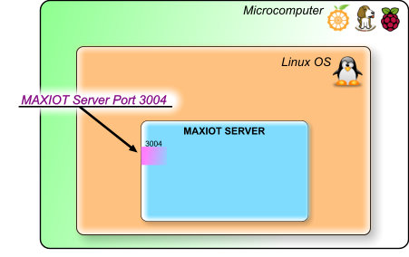
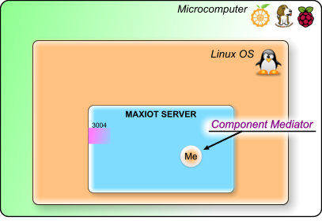

MAXIOT სისტემია¶
MAXIOT სისტემია ეს არის ინსტრუმენტი, რომლის საშუალებით ფიზიკური მოწყობილობები შემოგვყავს ვირტუალურ სამყაროში სადაც ასევე არსებობენ ვირტუალური მოწყობილობებიც. ასეთი ტრანსფორმაციის მიზანია მოწყობილობებს შორის მონაცემთა გაცვლის კავშირების მარტივი მენეჯმენტი. ვირტუალურ სამყაროში მოწყობილობები იღებენ და გამოცემენ მონაცემებს, საჭიროების შემთხვევაში ხდება მონაცემების ტრანსფორმაცი. მონაცემემბის ფიზიკური მოწყობილობის ავატართან დაბრუნებისას, ხდება ამ მონაცემების რეალურ სამყაროში დაბრუნება.
სარჩევი
MAXIOT SERVER¶
MAXIOT SERVER-რი ეს არის MAXIOT სისტემის მთავარი ნაწილი, რომელიც უზრუნველყოფს საგნების ინტერნეტისთვის (IOT) საჭირო ყველა ძირითად ფუნქციებს.
MAXIOT SERVER-რი უზრუნველყოფს იმ ვირტუალურ სამყაროს არსებობას, რიმელშიც იმყოფება ფიზიკური სამყაროდან შემოყვანილი და ასევე ვირტუალური სამყაროში შექმნილი მოწყობილობები. ასეთ მოსყობილობებს სისტემაში, MAXIOT კომპონენტები ეწოდება. MAXIOT SERVER-რი ასევე უზრუნველყოფს კომპონენტების შორის შექმნილი კავშირების არსებობას. MAXIOT SERVER-რიში ფიზიკური მოსწყობიობების შემოყვანას, ვირტუალური მოწყობილობის შექმნას და მათ შორის კავშირების დადგენა ხდება MAXIOT STUDIO - ვებ აპლიკაციის საშუალებით. MAXIOT STUDIO-სთან დაკავშირებული საკითხები განიხილულია ამ დოკუმენტაციის შესაბამის სექციაში.
MAXIOT SERVER-რის აპლიკაცია დაწერილია C ენის გამოყენებით და მის სამუშაო გარემოს წარმოადგენს ლინუქსის ოპერაციული სისტემა. სერვერის შეიძლება დაკომპილირდეს როგორც ARM ასევე x86 არქიტეკტურის კომპიუტერებზე, შესაბამისად სერვერის დაინსტალირება შესაძლებელია პრაქტიკულად ნებიმიერი მიკროკომპიუტერის ან ვირტუალური კომპიუტერის პლათფორმაზე. MAXIOT SERVER-რის პროგრამული კოდი დაწერილია ისე , რომ რაც შეიძლება ოპტიმიალურად იყოს გამოიყენებული კომპიუტერის პროცესორის და ოპერატიული მეხსიერების რესურსები.

როგორც მრავალი სხვა სერვერი MAXIOT SERVER-იც ჩართულია კომპიუტერულ ქსელში და მასთან დაკავშირება ხდება ინტერნეტ TCP/IP ქსელური პროტოკოლის საშუალებით. სხვადასხვა გარე მოწყობილობები შემოდიან MAXIOT SERVER-ში სპეციალურად მათთვის შექმნილი 3004 პორტის გავლით. (რა არის პორტი) თუ სერვერს წამოვიდგენთ როგორც რამე დაწესებულება, მაშინ პორტი ეს არის რომელიმე ოთახის კარები. დაწესებულებაში არსებულ ყველა ოთახს გააჩნია კარებეი თავისი უნიკალური ნომრით, შესაბამისად დაწესებულებაში შემოსულმა კლიენტმა იცის რა მისთვის საჭირო ოთახის ნომერი, პირდაპირ მიემართება შესაბამის ოთახისკენ.
{kind=link}
MAXIOT SERVER-ის ლოკალური მოწყობილობა(მედიატორი) არ იყენებს 3004 პორტს, რადგან ის ისედაც იმყოფება სერვერის შიდა სივრცეში. ამ მოწყობილობას ქვია მედიატორი(Me) რადგან მხოლოდ ამ კომპონენტს შეუძლია მონაცემების უშუალოდ სერვერზე, ვირტუალურ სამყაროში დამუშავება. უფრი დაწვრილებით ჩვენ მას განვიხილავთ დოკუმენტაციის wwwwwwwww სექციაში. კომპონენტი მედიატორი გამოსახუია ნახატში როგორც ნარინჯისფერი წრე, შიგნით განთავსებული Me სიმბოლოთი.
{kind=link}
ყველა დანარჩენი მოწყობილობა რომელიც, არ იმყოფება უშუალოდ MAXIOT SERVER-ზე ითვლება, სერვერის გარე მოწყობილობად. მნიშვნელობა არა ქვს იმას თუ სად იმნყოფება ეს მოწყობილობა - უშუალოდ იმავე მიკროკომპიუტერში, რომელშიც იმყოფება MAXIOT SERVER-რი თუ სადმე სხვაგან, ათასობით კილომეტრით მოშორებით, იქნება ის ფიზიკური თუ ვირტუალური(რამე პროგრამა გაშვებული რაიმე კომპიუტერზე) - ყველა ეს მოწყობილობა MAXIOT SERVER-იში შემოსასვლელად იყენებს 3004 პორტს. სერვერის გარე მოწყობილობები ნახატში წარმოდგენილია, როგორც მწვანე წრე, შიგნით განთავსებული De სიმბოლოთი.

იმის მიხედვით თუ სად იმყოფება სერვერის გარე მოწყობილობები, ჩვენ შეგვიძლია დავყით ისინი 2 ჯგუფად: პლათფორმის შიდა და გარე მოწყობილობად. პლათფორმის შიდა მოწყობილობად ითვლება ყველა ის მოწყობილობა რომელიც იმყოფება უშუალოდ იმავე ოპერაციული სისტემაში სადაც იმყოფრბა MAXIOT SERVER-ი. პლათფორმული გარე მოწყობილობაა, ყველა ის მოწყობილობა, რომელიც იმყოფება იმ მიკროკომპიუტერის გარეთ რომელზეც არის დაინსტალირებული MAXIOT SERVER-ი. პლათფორმული გარე მოწყობილობას, უბრალოდ გარე მოწყობილობას უძახიან.

არსებობს 2 ძირითადი საშუალება, რომ MAXIOT სისტემის მიკროკომპიუტერი მივუერთოთ გარე კომპიუტერულ ქსელს. ეს არის Wi-Fi (უკაბელო) და Ethernet -ტი. პლათფორმის გარე მოწყობილობაბი იყენებენ კომპიუტერულ ქსელს MAXIOT პლათფორმაში არსებულ MAXIOT SERVER-ში შესვლელად. ასევე კომპიუტერული ქსელის გავლით ვახდენთ სისტემის კომპიგურაციას. იმ შემთხვევაში თუ პროექტს არ ჭირდება პლათფორმის გარე მოწყობილობაბი, სისტემა შეგვიძლია გავთიშოთ გარე კომპიუტერის ქსელიდან და ჩავრთოთ მხოლოდ დაკომფიგურირების საჭიროების შემთხვევაში.

სერვერის გარე მოწყობილობებს სისტემაში ქვიათ უბრალოდ მოწყობილობა (Device) და ის გამოსახუია ნახატში როგორც მწვანე წრე, შიგნით განთავსებული De სიმბოლოთი.
MAXIOT SERVER-რისთვის ყველა გარე მოწყობილობა
უბრალოდ გარე მოწყობილობა (MAXIOT SERVER-რი არ განსაზღვრავს გარე მოწყობილობის ბუნებას)
თუ სად იმყოფება გარე მოწყობილობა MAXIOT SERVER-რი
რა არის კლიენტი¶
ტბა … და ანარეკლები
რომელიმე სხვა კომპონენტიდან მინაცემის მიღება და დამუშავებ
მას შეუძლია
კომპონენტი მედიატორი დგას ორ სხვადასხვა კომპონენტს შორის და ახდენს ერთისგან მიღებული მომაცემის დამუშავებას და მერესთვის მიწოდებას.
რადგან ის ხშირად
გამოიყენება სხვა მოწყობილობებიდან წარმოქმნილი მონაცემების დამუშავებისთვის. მაგალითად: მედიატორს(Me) შეუძლია გარე ტემპერატურის საზომი მოწყობილობიდან ფარენგეიტებში მიღებული ტემპერატურა გადაიყვანოს ცელსიუსში და გადაუგზავნოს მოწყობილობას, რომელიც ასახავს ტემპერატურას რაიმე დისპლაიზე. ანუ კომპონენტი მედიატორი დგას ორ სხვადასხვა კომპონენტს შორის და ახდენს ერთისგან მიღებული მომაცემის დამუშავებას და მერესთვის მიწოდებას.
მაგრამ მედიატორი შეიძლება თვიტონაც იყოს მონეცემების წარმოქმნელი
ან საბოლოო მიმღები.
მაგალითად: დამუშავებული მონაცემების გადაეცემეა სხვა გარე მოწყობილობას ან მონაცემების შენახვა რომე მონაცემთა ბაზებში და სხვა…. ასეთი სცენარი შეიძლება იყოს უსასრულოდ ბევრი, რადგან უშუალოდ სისტემის მენეჯრი ქმნის მოქმედებეის სცენარის სკრიპტს. კომპონენტი მედიატორი გამოსახუია ნახატში როგორც ნარინჯისფერი წრე შიგნით განტავსებული Me სიმბოლოებით.
MAXIOT STUDIO¶
MAXIOT სისტემის სერვერის მართვის,პროგრაიმრების აპლიკაცია
MAXIOT STUDIO აპლიკაციის პლათფორმა¶
(ოპრრაციული სისტემა, ვებ ბროუზერი)
STUDIO კომპონენტებთან მუშაობა¶
კომპონენტების - სისტემაში დამატება¶
(ავატარის დამატება)